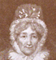

Alison Booth
Lamb, Kathryne Etheleen. Bloomingdale Women's Souvenir. Bloomingdale, IN: Lamb, Rockville Tribune Print, 1908.
Search OCLC WorldCat for this title.
Search Google Books for this title.
Lancelott, Francis. The Queens of England and Their Times: From Matilda, Queen of William the Conqueror, to Adelaide, Queen of William the Fourth. 2 vols. London: C. Daly, 1856. New York: Appleton, 1858; 1892; 1894; 1895.
Compare the version of Strickland's Queens of England also published by Appleton's (1851).
TOC: Matilda of Flanders, Queen of William the Conqueror; Matilda Atheling, First Queen of Henry the First; Adelicia of Louvaine, Second Queen of Henry the Second; Berengaria of Navaree, Queen of Richard the First; Isabella of Angouleme, Queen of John; Eleonora of Provence, Queen of Henry the Third; Eleonora of Castile, First Consort of Edward the First; Margaret of France, Second Queen of Edward the Second; Philippa of Hainault, Queen of Edward the Third; Anne of Bohemia, First Queen of Richard the Second; Joanna of Navarre, Queen of Henry the Fourth; Katherine of France, Queen of Henry the Fourth; Katherine of France, Queen of Henry the Fifth; Margaret of Anjou, Queen of Henry the Sixth; Elizabeth Woodville, Queen of Edward the Fourth; Anne of Neville, Queen of Richard the Third; Elizabeth of York, Queen of Henry the Seventh; Katherine of Arragon, First Queen of Henry the Eighth; Anne Boleyn, Second Queen of Henry the Eighth; Jane Seymour, Third Queen of Henry the Eighth; Anne of Cleves, Fourth Queen of Henry the Eighth; Katherine Howard, Fifth Queen of Henry the Eighth; Katherine Parr, Sixth Queen of Henry the Eighth; Mary, First Queen Regant.

Search OCLC WorldCat for this title.
Search Google Books for this title.
Lane, Margaret Stuart. Stories of Famous Women. London: Humphrey Milford, Oxford University Press, 1920. Series: Herbert Stang's readers. Bungay, Suffolk: Clay, 1931.
TOC: Elizabeth of Hungary; Black Agnes of Dunbar; Caroline Herschel; Florence Nightingale; Elsie Inglis.
See Short Stories of Famous Women , by Pearl A. Wanamaker, 1949, 1965.
Search OCLC WorldCat for this title.
Search Google Books for this title.
Latour, Therèse Louis. Princesses, Ladies and Adventuresses of the Reign of Louis XIV. Translated by W. Dutton Burrard. Paris: Figuière, 1923. London: Kegan Paul; New York: Knopf, 1924.
TOC: Anne of Austria, the Mother of Louis XIV (1601-1666); Anne-Marie-Louise d'Orléans, Duchesse de Montpensier, Known as La Grande Mademoiselle (1627-1693); Anne-Geneviève de Bourbon-Condé, Duchesse de Longueville (1619-1679); Ninon de Lenclos (1620-1705); Marthe du Vigean (1622-1665); Marie Mancini (1640-1707) and Louis XIV; The Marriage of Louis XIV (1660); Henrietta of England, Duchesse d'Orléans (1644-1670); La Brinvilliers (1630-1676); Louise de la Vallière (1644-1710); Madame de la Fayette (1634-1693); Madame de Sévigné (1626-1696); Olympe Mancini, Comtesse de Soissons (1639-1708); Hortense Mancini, Duchesse de Mazarin (1646-1699); Madame de Montespan (1641-1707); Drames Mystérieux--La Voisin and Her Associates (1676-1682); Marie-Anne Mancini, Duchesse de Bouillon (1649-1714; Madame de Maintenon (1635-1719); La Duchesse de Bourgogne (1685-1712); La Duchesse du Maine (1676-1753) and the Death of Louis XIV (1715); Note on the Mesdemoiselles de Blois.
Frontispiece of Louis XIV. A one-page "Preface to the French Edition" is translated. Numerous glossy illustrations reproducing court portraits or printed engraved portraits in annotated frames. About six pages of bibliography, French sources. Someone has taped the edges of a batik- style printed paper overlaid on the cloth covers (not the spine): a beige grid of purple squares with beige diamonds inside. The tone of the narratives resembles emotional romance fiction; there is little acknowledgment of historical speculation (motives and thoughts are asserted). An exception: "What was the reason why Marei- Magdeleine, at the age of twenty-two, had never had an offer of marriage? In the first place she was poor...even in our own times we have numbers of girls... compelled to remain old maids. For it is quite an open question whether Marie-Magdeleine had any claims to good-looks" (169).
Search OCLC WorldCat for this title.
Search Google Books for this title.
Latour, Thérèse Louis. Princesses, Ladies, and Republicaines of the Terror. London: Kegan Paul; Paris: Figuière; New York: Knopf, 1930.
TOC: Marie-Antoinette‐Unhappy Queen; Forgotten and Unknown Women of the Revolution; The Princesse de Lamballe; Charlotte Corday d'Armont; Madame Roland, née Manon Phlipon; Anne-Josèphe Terwagne, Known as Théroigne de Méricourt; The Mystery of the Child in the Temple; Lucille Desmoulins and Gabrille Danton; Two Active "Républicaines": Olympe de Gouges and Claire-Rose Lacombe; Madame Elizabeth, Sister of Louis XVI; The Holocaust of Robespierre: The Red Madd of the 29th of Prairial, Year II; The Devotees of Robespierre: The Cult of the "Mother of God"; Madame Tallien, Princesse de Caraman-Chimay; Madame de Talleyrand, Princess of Benevento; Pauline de Montmorin, Comtesse de Beaumont; Delphine de Sabran, Marquise de Custine; Bibliography.
Dedicated to the "dear memory of the best of husbands," who was the dedicatee of the 1924 volume in this set by Latour. Preface by Joseph Barthélemy, professor of political science and law, waxing enthusiastic for the "rare flowers" and "truthful...historical sketches" of the Frenchwoman (xi). Illustrations include portraits of men. No identified translator.
Search OCLC WorldCat for this title.
Search Google Books for this title.
Latour, Thérèse Louis. Princesses, Ladies, and Salonnières of the Reign of Louis XV. Translated by Ivy E. Clegg. London: Kegan Paul, 1927. New York: Knopf, 1928.
Dedication on August 19, 1927 (her husband's birthday) indicates that her beloved husband collaborated on the book before he died. Format similar to other Latour volumes, though the University of Virginia copy is rebound in red cloth. Numerous passages marked in pencil along margin. One illustration torn and repaired with tape.
TOC: Preface—By M. Léon Frapié; Marie Leczinska, Queen of France; Three Ladies at Supper: The Comtesse de Toulouse, Mademoiselle de Charolais, Madame de Mailly; The Duchesse de Châteauroux; Madame Geoffrin; Adrienne Lecourvreur; Madame d'Epinay; Eléanore de Jean de Manville: Comtesse de Sabran; The Marquise de Pompadour; A Mistress of Mirabeau: Marie-Thérèse Sophie Richard de Ruffey, Marquise de Monnier, called Sophie de Monnier; The Daughters of Louis XV: Madame Infante, Madame Henriette, Madame Adélaïde, Madame Victoire, Madame Sophie, Thérèse-Félicité, Madame Louise; The Private Life of Marie-Antoinette, Dauphine and Queen of France; Bibliography.
Search OCLC WorldCat for this title.
Search Google Books for this title.
Lawrance, Hannah. Historical Memoirs of English Female Sovereigns. 2 vols. London: n.p., 1838-1840. Title variant: Historical memoirs of the queens of England, from the commencement of the 12th century, same location and dates.
M. Burstein notes that “the medievalist Hannah Lawrance just beat Strickland into print” (“Reduced Pretensions,” 222).
TOC: Margaret of France; Isabel of France; Philippa of Hainault; Anne of Bohemia; The Early English Poets; Joan of Navarre; Katherine of France; Margaret of Anjou; Elizabeth Wydeville; Anne Neville; Elizabeth Wydeville.
Search OCLC WorldCat for this title.
Search Google Books for this title.
Lawrance, Hannah. The History of Woman in England and Her Influence on Society and Literature, From the Earliest Period. London: Colburn, 1843.
NOT:=history.
Search OCLC WorldCat for this title.
Search Google Books for this title.
Lawrence, Una Roberts. Pioneer Women. Nashville: Sunday School Board of the Southern Baptist Convention/Broadman, 1929; 1948.
TOC: Mary Prosser Jayne; Grace Clifford; Osile Allison; Martha Sullinger; Gertrude Joerg; Mabel McCall; Marie Buhlmaier, Fannie Hawkins Taylor.
Search OCLC WorldCat for this title.
Search Google Books for this title.
Leach, Rev. Charles. Mothers of the Bible. London: Nisbet, 1888; Stockwell, 1908. New York: Revell; Chicago: Bible Institute Colportage Assoc., Revell, 1900.
TOC: Hannah, the Praying Mother; Elisabeth, the Pious Mother; Jochebed, the Tried Mother; Eunice, Timothy's Mother; The Rival Mothers; The Shunammite, the Brave Mother; Sarah, A Mother of Nations; The Widowed Mother; The Trusting Mother; Rebekah, the Unwise Mother; The Canaanite, the Prevailing Mother; Naomi, the Sorrowing Mother; Hagar, the Homeless Mother; Rachel, the Dying Mother.
Part of The Red Library (Northwestern University Library School of Education bookplate, signed or stamped "GeoH.Betts" in script), with hazy engravings of biblical scenes in different styles (from various sources). Each chapter has a titlepage with epigraph or Bible verse (recto) and additional epigraph (verso), beginning the narrative on the following page. Poems and hymn lyrics are interspersed. A one-sentence Preface: "I pray that this little book may be as useful to "Mothers" in America as I belive it has been on this side [sic] the Atlantic. Charles Leach, Cavendish Chapel, Manchester, England."
Search OCLC WorldCat for this title.
Search Google Books for this title.
Leaves From Our Lives: Columbian Souvenir. Grand Rapids, MI: Dean, 1894.
Contains portraits and biographical sketches of members, with poetry and prose selections by them. Includes list of Michigan women taxpayers and wage earners, 1893 [statistics.]. Michigan Woman's Press Club.
No table of contents: can be found online at http://hdl.handle.net/2027/mdp.39015071254026 (13 June 2011).
Search OCLC WorldCat for this title.
Search Google Books for this title.
Lee, Anna Maria. Memoirs of Eminent Female Writers, of All Ages and Countries. Philadelphia: Grigg; Desilver; Towar & Hogan, 1827.
TOC: Maria Gateana Agnesi; Lucy Aikin; Maria Catherine Aunoy; Joanna Baillie; Anna Laetitia Barbauld; Laura Maria Catherina Bassi; Ann Baynard; Countess D'Haupoult Beaufort; Juliana Berners; Mary Ann Le Page Boccage; Frances Brooke; Elizabeth Bury; Jane Louisa Henrietta Campan; Elizabeth Carter; Susannah Centlivre; Emilia de Breteuil Chastelet; Hester Chapone; Corinna; Hannah Cowley; Juana Inez Cruz; Madame D'Arblay; Ann le Fevre Dacier; Maria du Deffand; Catharine Descartes; Maria Edgeworth; Madeline Pioche de la Verge; Cassandra Fidelis; Sarah Fielding; Madame de Genlis; Wilhelmina Maxwell Glenorchy; Mary Godwin; Magdalen Angelica Poisson; Isabella Graham; Mrs. Grant; Jane Grey; Elizabeth Griffith; Sophia Grouchy; Jean Marie Bouviere de la Mothe; Elizabeth Hamilton; Hypatia; Madame de Keralio; Mary Elizabeth de Lafite; Ann Therese Lambert; Charlotte Lennox; Catharine Macauley; Mary Wortley Montagu; Elizabeth Montagu; Hannah More; Lady Morgan; Harriet Newell; Mrs. Opie; Dorothy Pakington; Catharine Parr; Hester Lynch Piozzi; Annabella Plumptre; Mrs. Plunkett; Jane Porter; Anna Maria Porter; Ann Radcliffe; Marth Laurens Ramsay; Mary Robinson; Madame Roland; Margaret Roper; Elizabeth Rowe; Rachel Russel; Sappho; Anna Maria Schurman; Madeline de Schudery; Mary de Rabutin Sevigne; Anna Seward; Frances Sheridan; Charlotte Smith; Elizabeth Smith; Anne Louise Germain de Stael; Catherine Talbot; Mary Tighe; Sarah Trimmer; Priscilla Wakefield; Jane West; Helen Maria Williams.
Search OCLC WorldCat for this title.
Search Google Books for this title.
Lee, Edmund. Some Noble Sisters. London: Clarke, 1892.
TOC: “Sidney's Sister”; Wilhelmina, Margravine of Baireuth; Susanne Kossuth Meszlenyi; Caroline Lucretia Herschel; Dorothy Wordsworth; Mary Lamb; Elizabeth H. Whittier; Eugénie de Guérin.
Compare Pomeroy. Author of Dorothy Wordsworth Epigraph: “And were another childhood world my share,/ I would be born a little sister there.” George Eliot. A testimony to the power of “INFLUENCE” (xi) in a selection of “noble exemplars” though “not of heroic mold”; “sweet household women” (xv).
Search OCLC WorldCat for this title.
Search Google Books for this title.
Lee, Elizabeth, and Mrs. C. G. F. [Lucy Blanche] Masterman. Wives of the Prime Ministers, 1844-1906. New York: Dutton; London: Nisbet, 1918.
TOC: Lady Caroline Lamb; Lady Peel; Lady John Russell (Countess Russell); Lady Palmerston; Mrs. Disraeli (Countess of Beaconsfield); Mrs. Gladstone; Lady Salisbury; Lady Campbell-Bannerman.
UVA's catalogue's publication date, 1906, is speculative and not supported by WorldCat listings.
Search OCLC WorldCat for this title.
Search Google Books for this title.
Lee, F.H. The Children's Book of Heroines. London: George G. Harrap, 1940; 1948.
TOC: Grace Darling; Elizabeth Gurney; Edith Cavell; Joan of Arc; Florence Nightingale; Marie Curie; and others.
Search OCLC WorldCat for this title.
Search Google Books for this title.
Levinger, Mrs. Elma Ehrlich. Great Jewish Women. New York: Behrman's Jewish Book House, 1940.
TOC: Sarah, the Mother of Her People; Rebecca, the Girl Who Was Kind to Strangers; Rachel and Leah, the Daughters of Laban; Jochebed, the Mother Who Saved Her Baby; Miriam, Who Danced by the Sea; Deborah, the Woman Judge; The Daughter of Jephthah; Ruth, the Girl Who Came from Moab; Hannah, the Mother of Samuel; Shulamith, the Girl of the Vineyards; Huldah, a Teacher in Israel; Judith of Bethulia; Esther, a Star of Good Fortune; Hannah, the Mother of the Seven Martyrs; Marianne, a Most Unhappy Queen; Helena, a Royal Proselyte; Ima Shalom, the Wise. ; Rachel, Who Gave a Great Leader to Israel; Beruria, the Learned Wife of Rabbi Meir; The Wife of Sidon; Gracia Mendesia, 'The Heart of Her People'; Maria Nunez of Portugal; Henriette Herz, the Woman Who Stood at the Crossroads; Rachel, Queen of the Stage; Grace Aguilar, a Defender of Her Race; Judith Montefiore, Traveller in Many Lands; Rebecca Gratz, a Lady of Old Philadelphia; Penina Moise, Sweet Singer of Israel; Emma Lazarus, Poet of Her People; Clara de Hirsch, a Wise and Generous Giver; Lina Straus, Who Heard the Cry of the Needy; Sophie Irene Loeb, the Friend of Little Children; Sarah Chizick, a Lover of Palestine.
Dedicated to Henrietta Szold. Two-sentence Foreword dated Columbus, Ohio, January, 1940. The table of contents is divided into three sections: "In the Early Days" (Sarah through Hannah), "In Talmudic Times" (Mariamne through the Wife of Sidon), and "In Later Days and in Our Own Times" (Gracia Mendesia through Sarah Chizick). Illustrated by Marcile Weist Stalter in elegant Beardsley style (patterns, masses of black and white), with captions, "Ahasuerus saw how pitiful she was and his heart was so softened" (69); illustrations of scenes for Rebecca, the Daughter of Jephthah, Ruth, Shulamith, Esther, Mariamne, Rachel wife of Akiba, the Wife of Sidon, Maria Nunez, Grace Aguilar, and Rebecca Gratz. Direct modern style of story telling.
Search OCLC WorldCat for this title.
Search Google Books for this title.
Lenski, R[ichard] C[harles] H[enry] [1864-1936], and Lawrence S. Price. Outstanding Women of the Bible: For the Women of the Church of Today. Columbus, OH: Book Concern, [1900s?].
Original in German, Columbus, 1895. Dedicated to "my sainted father, William Henry Price and to my beloved mother, Charlotte Caroline Price." The Author states in Foreword that R. C. H. Lenski wrote the sketches in German, "the sainted W. H. Price...reproduced them for the women of his congregation in Detroit," and the author completed them. The copy from Concordia Theological Seminary of Springfield, Illinois, reinforced with green tape, gives no indication of Lenski as the author. No illustrations, some underlining in a couple of chapters. 291 ample pages.
TOC: Eve; Sarah; Rebecca; Leah and Rachel; Miriam; Rahab; Deborah; Jephtha's Daughter; Ruth; Hannah; Michal; Abigail; The Witch of Endor; Bathsheba; The Queen of Arabia; Jezebel; Athalia; Esther; The Old Testament Ideal for Women; Elizabeth; Mary, the Mother of Jesus; Mary, the Mother of Jesus (concluded); Herodias; The Woman of Samaria; The Woman of Canaan; Salome; Mary Magdalene; Mary, the Wife of Cleophas; Martha; Mary of Bethany; Sapphira; Dorcas; Rhoda; Lois and Eunice; Lydia; Priscilla; Phoebe; The New Testament Ideal for Women; Woman in Biblical Symbolism.
Search OCLC WorldCat for this title.
Search Google Books for this title.
Lewis, Agnes Smith. Select Narratives of Holy Women: From the Syro-Antiochene or Sinai palimpsest as written above the old Syriac Gospels by John the Stylite, of Beth-Mari-Qanåun in A.D. 778. London: Clay/Cambridge University Press; New York: Macmillan, 1900. Studia Sinaitica 9-10.
TOC: Eugenia; Mary - Marinus; Euphrosyne; Onesima; Drusis; Barbara; Mary (slave of Tertullius); Irene; Euphemia; Sophia; Cyprian and Justa; Hymn of Mar Ephraim; Colophon.
Search OCLC WorldCat for this title.
Search Google Books for this title.
Lewis, Howell Elvet, et. al.. Women of the Bible: Rebekah to Priscilla. Manchester: Robinson, 1904.
TOC: Rebekah; Rachel; Lot's Wife; Miriam; Deborah; Jael; Jephthah's Daughter; Abigail; Jezebel; The Little Hebrew Maid; Esther; The Mother of Our Lord; Martha and Mary; The Woman of Samaria; The Syro-Phoenician Woman; The Widow Who Gave Her Two Mites; The Penitent Sinner; Mary Magdalene; Dorcas; Lydia; Aquila and Priscilla.
The book was actually co-written by several authors, with different chapters being written by H. Elvet Lewis, J.G. Greenhough, Walter F. Adeney, D. Rowlands, P. Carnegie Simpson, and George Milligan. The last pages of the book contain advertisements for "A List of Theological Books, Published and Imported by James Robinson." Such books as Men of the Old Testament, Cain to David by much the same list of authors fill more than four pages, followed by collections of sermons or Bible studies by Americans such as Dr. David James Burrell of New York. The thick-page volume from Old Dominion University is water stained and shows signs of lesson preparation: underlining in different colors, including a green highlighter (it was checked out in 2010).
Search OCLC WorldCat for this title.
Search Google Books for this title.
Lewis, Thomas H. Women of South Africa: A Historical, Educational & Industrial Encyclopaedia and Social Directory of the Women of the Sub-Continent. Cape Town: Le Quesne & Hooten-Smith, 1913.
NOT:=reference.
Search OCLC WorldCat for this title.
Search Google Books for this title.
Lindsay, Effie Grout. Missionaries of the Minneapolis Branch of the Women's Foreign Missionary Society of the Methodist Episcopal Church. [ Minneapolis: n.p.], 1904.
TOC: Sophia Blackmore; Minnie F. Abrams; Ella Blackstock; Emma E. Ferris (Shellubear); Susan Harrington (Cousland); Willma H. Rouse; Florence Sterling (Lenth); Clara Martin; Helen Ingram; Martha Nicolaisen; Mary Cody; Ida Ellis; Adeline Goetz (Guthrie); Christiana Williams (Hall); Alma Jakobson (Keventer); Mary Olson; Mabel Lee; Anna Stone; Frieda Lorenz.
Search OCLC WorldCat for this title.
Search Google Books for this title.
Lives of Celebrated Women. New York: Allison, 1875; 1890; Lovell, 1910.
Not in British Library. Title shared by Samuel G. Goodrich of “Peter Parley's Tales,” 1845, and by Louise Cochelet, “Mme. Parquin,” 1833. This work is a series in Allison's Select Library that is often catalogued under each author's name or work. The three “lives” are Jules Michelet, Joan of Arc; A. de Lamartine, Mary Queen of Scots; T. A. Trollope, Vittoria Colonna, the latter related to Trollope's A Decade of Italian Women . See also Pop Chart
Search OCLC WorldCat for this title.
Search Google Books for this title.
Logan, Mrs. John A. [Mary Simmerson Cunningham Logan]. Thirty Years in Washington; or, Life and Scenes in Our National Capital. Hartford, CT: Worthington, 1901. With added two final chapters: Our National Government: Or, Life and Scenes in Our National Capital Portraying the Wonderful Operations in All the Great Departments, and Describing Every Important Function of Our Law-Making Bodies, Including Its Historical, Executive, Administrative, Departmental, Artistic, and Social Features; With Sketches of the Presidents and Their Wives, and of All the Famous Women who Have Reigned in the White House from Washington's to Taft's Administration. Minneapolis: Baldwin, 1908; 1909. Cleveland: Barnum, 1908.
NOT:=male-female collective biography.
Describes virtually every facet of how Washington, D.C. worked at the time of writing. Found online at Google Books and Internet Archive (21 June 2011).
-
Mrs. John A. Logan
-
 Mrs. President Roosevelt
Mrs. President Roosevelt -
The Library of the Department of State
-
Mrs. Rev. Stephen Brown
-
Mrs. W. A. Leonard
-
 Mrs. S. F. Fitzgerald
Mrs. S. F. Fitzgerald -
 Miss Alice Roosevelt
Miss Alice Roosevelt
Search OCLC WorldCat for this title.
Search Google Books for this title.
Logan, Mrs. John A. [Mary Simmerson Cunningham Logan]. The Part Taken by Women in American History. Wilmington, DE: Perry-Nalle, 1912; New York: Arno Press, 1972.
NOT:=reference, history. Encyclopedic, with 15 ½-pp., double-column subject index and extensive list of works consulted. “Appreciating the fact that scant tribute has been paid to the women of America and that no concrete record of their achievements existed, I have . . . endeavored . . . to bring together the names of the women well known, and to rescue from oblivion those unheralded . . . and thus form a compendium of all names and achievements of the women who have taken a part in the vital affairs of our country” (vii). Logan's catalogue of praise culminates in “Women as co-partners in the guardianship of American institutions for the benefit of mankind./ Women's part in . . . organizing clubs, societies and associations in the interest of History, Charity, Culture and Society” (ix). Generic titles progressing from “Aboriginal Women of America” through chapters on “Women of the Confederacy,” “the Missionary Field,” “Woman Suffrage,” Catholic and Jewish women, “Christian Science,” and occupations such as business.
TOC: Aboriginal Women of America; Women Pioneers; Women of the Revolution; Women from the Time of Mary Washington; Women of the Confederacy; Women in the Missionary Field; Women as Philanthropists; Woman Suffrage; Women Reformers; Catholic Women in America; Jewish Women of America; Women as Temperance Workers; Woman’s Work for the Blind; Christian Science; Women Educators; Women in Professions; Women Inventors; Women in Civil Service; Women in Business.

Search OCLC WorldCat for this title.
Search Google Books for this title.
Loliée, Frédéric. The Gilded Beauties of the Second Empire. Adapted by Bryan O'Donnell. London: Long, 1909. London: Long; New York: Brentano's, 1910.
TOC: Society; Gay Life and Theatre Wings; The High Life of Gay Life; Noctambulists and Famous Gamblers; The Legend of La Marquise de Paiva; Among the Artists: Opera Queens; Among the Artists: In the Realm of Operette; A Trip to Cytherea; Leonide Leblanc; Anna Deslion; Julia Beneni (Known as La Barucci); Adele Courtois; Esther Guimond; Marguerite Bellanger; Adele Remy; The Heavy Battalion of Cytherea X.
The Preface promises reviews of "the Court, society, and semi-society" and analyses of both the "decorum and the absence thereof." The table of contents offers lengthy running headers delineating the subjects of each chapter, from people to parties to scandals.
Search OCLC WorldCat for this title.
Search Google Books for this title.
Lord, Fred Townley. Great Women of the Bible. New York: Harper; London: Cassell, 1939; 1941.
Lord is identified on title page as B.A., D. D., Minister of the Bloomsbury Central Church, London. Volume in two parts, "An Old Testament Portrait Gallery" and a New one. Many chapters begin with reflection on "our" perspective, e.g. ch. XV, Priscilla: "So far, as we have wandered along the portrait gallery of Bible women, we have been arrested by the pictures of wives, widows, sisters; all conspicuous for the part they played in the religious and social life of their time. As we venture further...we find a married couple" (185). University of Richmond copy checked out five times 1990-1995 (apparently); gift of Dr. Solon B. Cousins. Passages in some chapters marked in pencil.
TOC: Eve, the Mother of Mankind; Sarah; Rachel; Deborah; Jezebel; Ruth; Esther; The Virtuous Woman; Mary the Mother of Jesus; The Woman of Samaria; Mary Magdalene; The Widow of Nain; Martha and Mary; Lydia; Priscilla; The Women in the Background.
Search OCLC WorldCat for this title.
Search Google Books for this title.
Lord, Fred Townley. Great Women in Christian History. London: Cassell, 1940.
TOC: Perpetua, a Martyr for Christ; Monica, the Mother of a Saint; Hilda, Abbess of Whitby; St. Bridget of Kildare; St. Elizabeth of Hungary; St. Catherine of Siena; Joan of Arc; Catherine von Bora; Margaret, Queen of Navarre; St. Teresa; Lucy Hutchinson; Madame Guyon; Margaret Fell; Susannah Wesley; The Countess of Huntingdon; Catherine Booth.
Search OCLC WorldCat for this title.
Search Google Books for this title.
Lord, John [1810-1894]. Great Women. Vol. 5 of Beacon Lights of History by John Lord. 10 vols. New York: Ford, Howard & Hulbert, 1883?-1896?. vol. 7 of Beacon Lights of History by John Lord. New York: J. Clarke, 1886; Ford, Howard & Hulbert, 1913. As Great Women: Great Rulers. Vol. 4 of Beacon Lights of History. London: Waverly, 1921.
TOC: Heloise; Joan of Arc; Saint Theresa; Mme de Maintenon; Sarah, Duchess of Marlborough; Mme Recamier; Mme de Stael; Hannah More; George Eliot.
-
 Madame Recamier
Madame Recamier -
Joan of Arc Hears the Voices
-
Sarah, Duchess of Marlborough
-
 Mme de Recamier
Mme de Recamier -
 Mme de Stael
Mme de Stael -
Garrick and his Wife
-
Hannah More
Search OCLC WorldCat for this title.
Search Google Books for this title.
Lotz, Philip Henry, ed. Women Leaders. New York: Association Press, 1940; 1946. Vol. 2 of His Creative Personalities Series.
TOC: Jane Addams, Pioneer in Social Justice and Peace, by Edna M. Baxter; Evangeline Booth, General of the Salvation Army, by L.B. Hazzard; Edith Cavell, Martyr Nurse, by J.W. Prince; Marie Curie. Eminent Scientist, by Lucile Desjardins; Amelia Earhart, First Lady of the Air, by W.A. Harper; Helen Keller the Handicapped, by Lucile Desjardins; Muriel Lester, Christian in Action and Creator of Good Will, by Edna M. Baxter; Jenny Lind, the Swedish Nightingale, by S.P. Franklin; Florence Nightingale, Nurse-Philanthropist, by C.J. Lotz; Alice Freeman Palmer, Inspiring Teacher, by E.A. Leslie; Maude Royden, World Famous Preacher, by Laura H. Wild; Harriet Beecher Stowe, Well-Known Writer, by A.J.W. Myers; Susannah Wesley, Noble Mother, by J.W. Prince; Mary E. Woolley, Renowned Educator, by Grace S. Overton.
Search OCLC WorldCat for this title.
Search Google Books for this title.
Love, Cornelia Spencer. Famous Women of Yesterday and Today. Chapel Hill: University of North Carolina Press, 1932; 1935; 1936. 3d ed. 1938.
These pamphlets are "published six times a year" as a series that includes C. S. Love, Other People's Lives, 1928, 1931, 1933, among works on biography, history, drama, literature, and other subjects. The "University Extension Library" is designed to share "the advantages available to residents of the University" through study guides and lending of the books studied. A complex procedure and fees allow clubs to register for the guides and to borrow the books, which outline topical meetings and additional references. A thin issue bound in green paper: vol. IV No. 6 (July, 1938). Each entry describes the life of the woman mentioned for 2 or 3 paragraphs, then gives a list of suggestions for further reading; the two or three women under each chapter title would be studied at one of the fourteen meetings of a reading club.
Search OCLC WorldCat for this title.
Search Google Books for this title.
Luckett, Margie Hersh, ed. Maryland Women, Baltimore, Maryland, 1931-1942. 3 vols. Baltimore: King, 1931 (v. 1); 1937 (v. 2) 1942 (v. 3).
First volume (517 pages); following, 417 and 444 pages respectively. Bound in black with the Maryland seal on the front cover in gold. Margie H. Luckett, "Editor and Publisher," appears to have signed each title page; this is supported by the bookplates of the Library of the University of Virginia: "Presented by Mrs. Edmund Boone Luckett" (typed). She appears in the frontispiece of the third volume, captioned Mrs. Edmond Boone Luckett, The Author, where in volume one Queen Henrietta Maria and in volume two Queen Anne appeared. Each volume is dedicated to one of Mrs. Luckett's daughters. The third volume differs in a glossy insert between copyright and dedication pages: the lyrics to the Star-Spangled Banner, facing a color image of the flag above the Pledge of Allegiance. This seems likely to be prompted by the war ongoing in 1942. The brief "Foreword" to v. 3 states: "Responding to a continued demand for Maryland Women, the author has compiled the third volume; this volume before leaving the press has been ordered by different universities, to be placed by volume 1 and volume 2 as reference books. The author has derived great pleasure in the contact of these native and adopted Maryland Women. To quote Carlyle, who said, 'he would give more for a single picture of a man than all the books that might be written of him.'" Short alphabetical entries (indexed) take very different forms, suggesting self- or family-contributed bios, most with glossy photographs of the subject. The contents appear almost entirely distinct in each volume, though the daughter Elise Luckett Balsam, featured in volume one, has an obituary in volume three (sadly inserted with her beautiful portrait and paginated "6A"), and one Mrs. John Nicholas Brown (Anne Kinsolving), misplaced in the alphabet at the very end of volume one, reappears 3: 23. These appear all to be white women; some could be Jewish, though this is not remarked; a number have careers in music, the arts, journalism, even sky-diving, and at least one is a suffrage advocate. Some portraits show pageantry, as women play the role of queens or the Goddess of Liberty (3: 28). The inclusion of English nobility and royalty goes along with a frequent insistence on genealogy and membership in the Daughters of the American Revolution.
Search OCLC WorldCat for this title.
Search Google Books for this title.
Lugrin, Nellie de Bertrand, and John Hosie. The Pioneer Women of Vancouver Island, 1843-66. Vancouver Island: Women's Canadian Club of Victoria, 1928.
Search OCLC WorldCat for this title.
Search Google Books for this title.
Luigini, Frederico. The Book of Fair Women (1554). Translated by Elsie M. Lang. London: Werner Laurie; New York: J. Pott, 1907.
From the Venetian edition of 1554. Cf. the photography collection, E. O. E O Hoppé, R King, The book of fair women (London: Cape, 1922).
Search OCLC WorldCat for this title.
Search Google Books for this title.
Lundholm, Rev. Algot Theodor, Women of the Bible. Rock Island, IL: Augustana, 1923-26; 1927; 1948; 1954; 1957; 1959; 1961.
"The following pen pictures of some of the outstanding women of the Bible were originally prepared for the study period at the regular meetings of the women's organization in two churches where the author served as pastor during twenty-two years" (Preface, n.p.; dated 1948). Originally in two volumes. In two sections, Old and New Testament. Not exclusively biography; will open out into general precepts or first- person anecdotes, e.g. "Some years ago I was called to the bedside of a sick man" (59). "Every mother is an author," her books are her children. "Deborah knew how to rule" (70). With wide margins and fairly large type, a plain and plain-spoken book, each chapter beginning with chapter and verse and segmented with subheadings, it begins with "The Magnificat" Luke 1:46-55 printed in the shape of a cross on a pediment. Sentences underlined, chapter numbers circled.
TOC: Woman: The Ideal According to the Scriptures; Eve: The Mother of the Human Race; Sarah: The Wife of Abraham; Rebekah: The Wife of Isaac; Rachel: The Mother of Joseph; Miriam: Singer, Sister, and Patriot; Ruth: The Foremother of Christ; Deborah: Judge, Warrior, and Singer; Jephtha's Daughter: An Example of Filial Devotion; Delilah: Sampson's Faithless Wife; Witch at Endor: Who Practiced Sorcery; Hannah: the Mother of Samuel; Abigail: The Tragedgy of an Unhappy Marriage; Queen of Sheba: Solomon's Royal Guest; Jezebel: Cursed by Her Own Hatred; The Shunammite: The Hospital Matron; Queen Esther: The Saviour of Her Own People; Elisabeth: Mother of John the Baptist; Mary: The Mother of Jesus; Anna: Widow and Missionary; Martha: Who Lived to Serve; Mary: Who Lived to Worship; Mary Magdalene: Saved to Minister; At Jacob's Well: The Woman With a Past; Woman of Canaan: The Power of a Mother's Plea; Joanna: Wife of Herod's Steward; Jairus' Daughter: The Power of a Father's Prayer; Herodias: Mother of Salome; Sapphira: The Wife of Ananias; Dorcas: The Woman of Good Works; Lydia: The Christian Business Woman; The Elect Lady: The Ideal Christian Matron.
Search OCLC WorldCat for this title.
Search Google Books for this title.